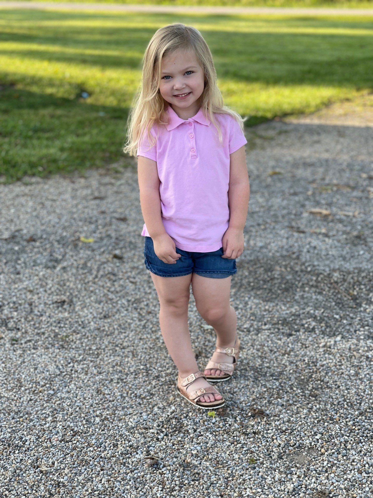

We are the Meisinger's. Welcome to our page.
I am Aubry. This is my husband David and our daughter Harper. David and I have been together since January 2008. We purchased our first house together in September 2008. We lived in that small one-bedroom house until 2016 when we found out I was pregnant with Harper. We lived in my parent’s basement until we could find the perfect house for our growing family. In January of 2017 we finally moved in and got the new house ready to go. (This involved a TON of wallpaper removal). Harper made her way into the world just a couple of months after moving in. David and I both work fulltime from home. We have 2 dogs: Arlo, a miniature Schnauzer and Kota, a black lab. Arlo is Harper’s best bud and her protector. Kota and Arlo love to run around the yard and play.
We love to travel. Visit our travel page to see details of our favorite places and future adventures.

This is our daughter Harper. She is the best thing to happen to us. Harper started Preschool this fall. She loves to be a helper for the day. They have a lunch helper, calendar helper, Pledge leader, and so many more. When she is in the rotation, she cannot wait to get home to tell us all about it. Harper also started dance. She is taking Jazz and Tap. Harper has a wonderful personality that shines like no other. She is: